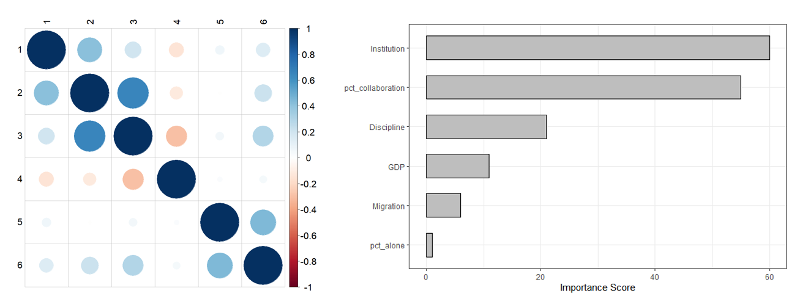

Srpski akademski migrant je osoba koja je kao član državnog univerziteta u Srbiji objavila naučni rad, emigrirala i objavila novi rad kao član institucije iz inostranstva. Da bismo identifikovali što više naučnika, usvajamo slobodnu definiciju „publikacije“ koja uključuje recenzirane radove, nerecenzirane radove i zbornike konferencija. Uprkos širokoj definiciji, broj istraživača je potcenjen - on ne uključuje srpske studente i istraživače u ranoj fazi karijere koji su napustili zemlju bez objavljivanja rada, kao ni istraživače rođene u Srbiji koji su svoje obrazovanje završili u inostranstvu i nikada nisu bili povezani sa srpskim univerzitetom. Još jedno ograničenje ovog pristupa ima veze sa prirodom istraživanja u različitim naukama. Mnogo je verovatnije da ćemo identifikovati naučnike u oblastima u kojima se puno objavljuje, poput biologije, od onih u oblastima u kojima se manje objavljuje, kao što su filozofija ili matematika.
Podaci
Da bismo utvrdili kako migracije utiču na produktivnost srpske naučne zajednice, prikupili smo podatke o naučnim radovima putem Microsoft Academic API - veb pretraživača za akademske publikacije. Prateći sve objavljene radove pojedinih autora, mogli smo da utvrdimo da li je neko migrant, koliko objavljuje i sa kim objavljuje. Microsoft Academic pruža osamnaest atributa koji se mogu koristiti za pretragu baze podataka. Najvažniji su naslov rada, ID rada, godina izdanja, broj citata, imena, ID i institucije autora, kao i atributi koji se odnose na časopis i polje studija. ID autora (broj) je bio pouzdaniji identifikator za praćenje od imena autora. Oslanjanje na ime pokazalo se tehnički izazovnim, jer različiti časopisi prikazuju različite varijacije istog imena, posebno sa slovima kao što su ž,š,č i ć. Napredak tehnika mašinskog učenja još uvek nije dostigao dovoljnu tačnost da bismo pretraživali naučnike po imenu. U idealnom scenariju, mogli bismo da identifikujemo srpske istraživače na osnovu imenu i prezimenu. Takva metoda još nije dostupna tako da u ovom radu migrante definišemo uže i fokusiramo se samo na one koje možemo identifikovati u bazi podataka.
Rezultati
Identifikovali smo ukupno 11.372 istraživača sa srpskih univerziteta za period od 2000. do 2020. godine. Od tog broja, 977, ili 8,6%, identifikovano je kao migranti. Kao što bi se moglo očekivati, srpski naučnici emigriraju u bogate zemlje sa jakim obrazovnim i istraživačkim institucijama. Od 977 emigranata, identifikovali smo samo 68 (7%) osoba koje su objavile rad u saradnji sa naučnicima sa srpskih univerziteta. Istraživanje zašto 93% naučnika ne sarađuje sa bivšim kolegama kada napusti državu je van opsega ove studije. Međutim, predlažemo sprovođenje ankete kako bi se ovaj problem bolje istražio.
Drugi zadatak ovog dela projekta je da istraži da li naučnici-migranti objavljuju više od naučnika u Srbiji. Rezultati pokazuju da migranti godišnje objave 2,3 rada više od svojih srpskih kolega. Samo na osnovu ovog broja, moglo bi se zaključiti da čin napuštanja zemlje povećava individualni i globalni doprinos nauci. Međutim, drugi faktori mogu doprineti ovoj razlici. Da bismo istražili ove faktore, koristili smo model Random Forest. RF je metoda mašinskog učenja koja koristi kolekciju stabala za klasifikaciju slučajnih promenljivih. Jedna od prednosti ovog modela je što može da se koristi za rangiranje važnosti promenljivih. Promenljiva je ,,važnija" ako objašnjavaja veći procenat varijanse uzorka.

Rezultati pokazuju da je kvalitet istraživačke institucije (mereno prosečnim brojem radova po osobi) najbolji indikator naučne produktivnosti. Ovaj rezultat nije iznenađujući. Dobre istraživačke institucije imaju bolji pristup istraživačkim fondovima i laboratorijama, zajedno sa opsežnijom mrežom naučnih saradnika. Mali značaj promenljive ,,Migracije" ukazuje na to da čin migracije ne dovodi do veće produktivnosti, osim ako istraživač ne ode na produktivniju instituciju.
Domaći naučnici koji sarađuju sa stranim naučnicima objavljuju više radova od onih naučnika koji ne sarađuju sa strancima. U proseku, oni koji sarađuju objave 1,9 radova više nego oni koji ne sarađuju. Ovi rezultati ukazuju na dve stvari: Prvo, gubitak produktivnosti srpske akademske zajednice izazvan emigracijom mogao bi se delimično nadoknaditi podsticanjem međunarodne saradnje. Drugo, produktivnost istraživača je u visokoj korelaciji sa produktivnošću institucije. Čak i skromna poboljšanja u istraživačkom okruženju, zajedno sa naporima da se poboljša saradnja, mogla bi da dovedu do pozitivnih efekata za celu istraživačku zajednicu.
Preporuke
Rezultati sugerišu da na naučnu produktivnost, između ostalog, utiču tri faktora: kvalitet institucije, veličina emigracije i obim međunarodne naučne saradnje. Institucionalno, stopa rasta objavljivanja naučnih radova od 2012. godine se smanjuje, pa čak i prelazi u pad u nekim naukama. Prva preporuka je da se ispitaju razlozi za ovaj pad. Iseljavanje je problem u svim segmentima društva, ne samo u naučnoj zajednici. Od ova tri faktora, poboljšanje saradnje izgleda kao najrealniji cilj. Zbog toga, predlažemo istraživanje koje bi analiziralo zašto je samo 7% srpskih migranata sarađivalo sa svojim bivšim kolegama i kako bi se taj broj mogao povećati.